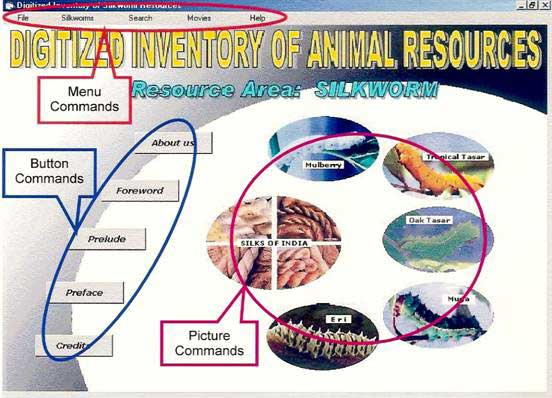
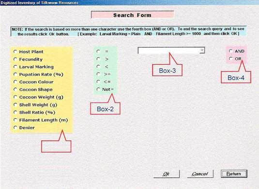

QUICK START
The package starts Main menu screen through ‘Bharatiya Resham’ title screen
as shown below.  The menu
commands and buttons of the main screen are explained below. Menu commands: File To close this package and exit. Silkworms To open a sub-menu with all the five types of silks. From each type the user can select related literature by clicking on ‘Information’ and for its character details click on ‘Breeds / Hybrids’. It displays all the relevant details from the database. Search Similar to the ‘Silkworms’ menu. A search query can be built on any five
types. On selection, a search query
built form appears as below. A user
can built his/her own query from this screen. The box-1 to select the character, box-2 to
select the operator and box-3 to select the value (pickup the available
values from the database). If the user
wants to query more than one character box-4 may be used to combine the
second query with first one. Finally
click ‘Ok’ to see the result of the query.  Movies To show a video clipping of a selected sericulture activity
from a sub-menu. Help To provide this help screen. Button commands: About us Detailing about the Central Silk board activities and its
Institutions. A brief note on Central
Sericultural Research & Training Institute, Foreword Forward from the Chief Executive Officer and Member Secretary
of Central Silk Board Dr. H. Basker, IAS. Prelude Prelude from the Chief Coordinator of this Digitized
Inventory of Animal Resources Project Dr. J.R.B. Alfred, Director, Zoological
Survey of India. Preface Preface from the Principal Investigator of the Silkworm
Resource, Dr. S.B. Dandin, Director, CSR & TI,
Mysore Credits The people involved in this nationwide effort by the Department
of Bio-technology, Govt. of India, Picture commands: Silks of Mulberry Gives detailed information about the mulberry silk industry,
viz., host plant cultivation and
silkworm rearing to weaving and fabrics. Tropical Tasar Gives detailed information about the Tasar
silk industry prevailing in the Indian tropics, viz., host
plant cultivation and silkworm rearing to weaving and fabrics. Oak Tasar Gives detailed information about the Tasar silk industry
flourishing in the temperate and sub-tropical regions of the country, viz., host plant cultivation and
silkworm rearing to weaving and fabrics. Muga Gives detailed information about the muga silk
industry endemic to Eri Gives detailed information about the Eri silk
industry common in the North east and eastern part of the country, viz., host plant cultivation and
silkworm rearing to weaving and fabrics. |